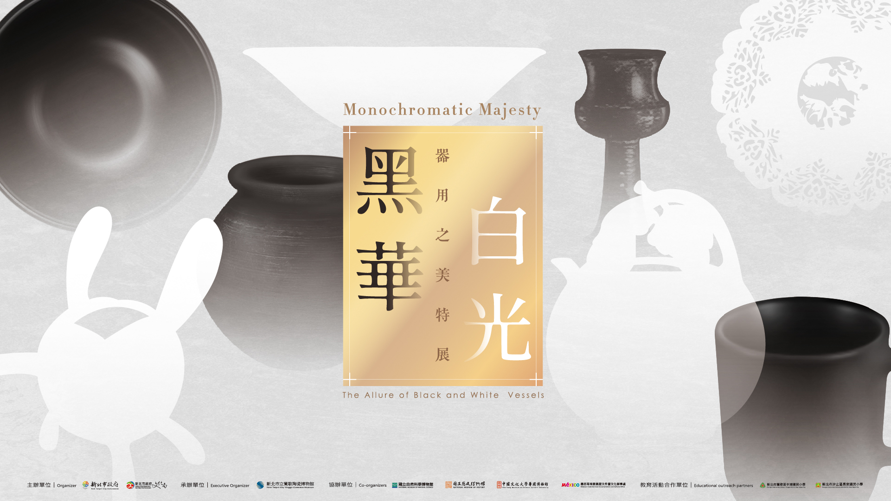

04黑華白光—器用之美
新北市立鶯歌陶瓷博物館三樓特展室
平日 09:30-18:00
假日 09:30-20:00
假日 09:30-20:00
陶瓷器純色的表現除了銅紅、青瓷之外，黑釉與白釉也是大宗。黑白雖無色彩卻並非無語，白的空無有著多樣質感，黑的深沉亦有不同層次。 本展共計展出142組件，包含國內外從古至今的黑白陶瓷文物與作品，除了本館的典藏品外，特別邀請國立自然科學博物館、國立歷史博物館與中國文化大學華岡博物館與墨西哥商務簽證文件暨文化辦事處共同協辦，借展珍貴的新石器時代龍山黑陶、商周白陶、歷代黑白釉陶瓷器，以及臺灣考古遺址所出土之新石器時代晚期的灰黑陶標本，並有國內外多位陶藝創作者的燻燒黑陶、天目茶碗以及現代設計茶具、花器等各式器物。 以黑白兩色的生活器物為主，邀請觀者捨棄直接連結作者內在表達的觀展經驗，改從器物的外在質感察覺自身當下的感受。在現代生活中，器物追求極簡與設計感，黑白兩色仍是不變的時尚要角，是一場實用與美感兼具的視覺饗宴。
※需購票入場